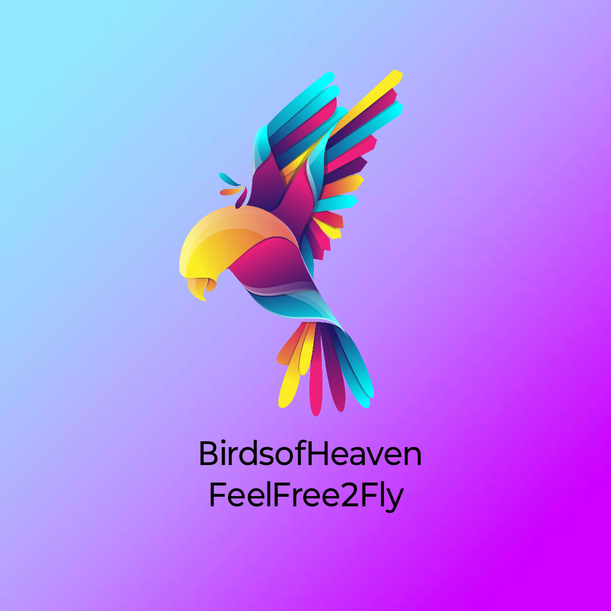

As a child, I recall waking up to the sounds of morning doves, pigeons, and sparrows. I love feeding and watching birds since. Every bird is different, colorful and smart, unique in ways that never fail to impress me. If you like watching birds too, please watch a few of these amazing videos of wild birds by clicking on their images below. Thanks 🕊️.
Blue Jay and many more ... 🦢🦩🦚🦉🐧🦃


From Blue Jay, Weaver-bird, Parrots, Cardinals, and Hummingbirds to some other highly intelligent birds like Crows, who solve complex problems and Ravens, who mimic humans' sounds accurately, I am fascinated by their beauty and behavior. If I could spend an entire day watching birds and capturing their photos or videos, I would. However these images and videos are taken from gettyimages.com to provide closeups of these beautiful birds with a high-quality professional camera. We all know what a professional camera does what my phone camera doesn't. Yes, camera lol. We are dicussing a camera on a birds website because bird-watching is not fun if you cannot capture their beauties in your eyes or in your cameras. You can see them reciprocate love when we feed them in our backyards if not keep as a pet inside the house. Those who have a pet Cockatoo or an Indian-ringneck parrot, know how much attention and love parrots need like our own child when they are kept inside a house. These birds love to live in social and free natural environments and not isolation. Hope you like watching these fun videos and thanks for watching, but please always remember to feed and love your wild or pet birds, and most importantly, talk to them whenever possible as they are quick learners.

Please let me know your feedback on which bird I missed and need to add its video via my LinkedIn in Portfolio below. Thank you.
